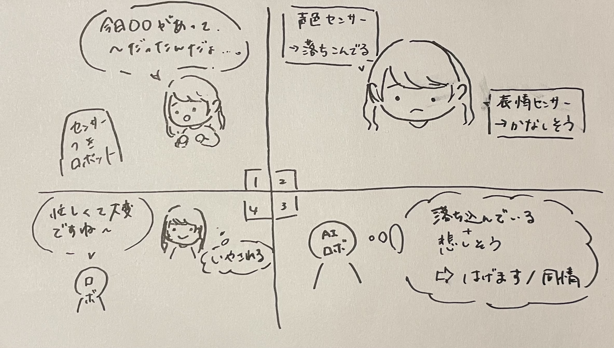
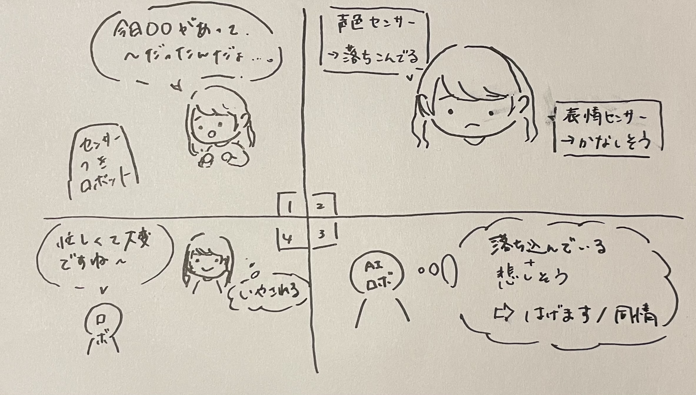

1.センサーを活用したIoT
グループで出た案は以下の通り。

センサーに関してはよく使われる光や音から、味や加速度といったあまり想像のできないものまで様々出た。
しかし、そのセンサーの活用となると難しく、既によくあるIoT製品やサービスばかりになった。
また、それをサービスとして収益化するとなると、利用料金に見合う価値の創造が課題となった。
センサーに関してはよく使われる光や音から、味や加速度といったあまり想像のできないものまで様々出た。
しかし、そのセンサーの活用となると難しく、既によくあるIoT製品やサービスばかりになった。
また、それをサービスとして収益化するとなると、利用料金に見合う価値の創造が課題となった。
2.センサーを活用したモノのアイディア
1のグループワークでも出た、“画像”と“音”のデータを収集する２つのセンサーの活用し、
最近話題のチャットAIと組み合わせた以下の案を考えた。

人の感情を表情や声色のデータを使用して予測し、返答をするチャットAI・ロボットだ。
ChatGPTやMicrosoft Bing、Google Bard の登場により、最近話題のチャットAI。
自ら利用してみて感じたが、やはりどれもどこか機械的で冷たい印象を抱いてしまう。
完璧に近い回答を返すことも大事だが、年齢に関わらず独り身が多い現代に求められるのは
もっとあたたかくて心の隙間を埋めてくれる、話し相手のような存在ではないだろうか。
そんな存在として利用できるAIに必要なのは、感情理解だ。私たち人間も感情を理解して寄り添う。
それに必要な要素として、人間同様、表情や声色がある。画像や音のセンサーでデータを組み合わせて
感情を予測し、その感情に合った返答を作成する。スケッチにもあるが、同情や共感を大切にする。
寂しさやつらさ、楽しさを共有する相手として一定の需要があるのではないかと考える。
最近話題のチャットAIと組み合わせた以下の案を考えた。

人の感情を表情や声色のデータを使用して予測し、返答をするチャットAI・ロボットだ。
ChatGPTやMicrosoft Bing、Google Bard の登場により、最近話題のチャットAI。
自ら利用してみて感じたが、やはりどれもどこか機械的で冷たい印象を抱いてしまう。
完璧に近い回答を返すことも大事だが、年齢に関わらず独り身が多い現代に求められるのは
もっとあたたかくて心の隙間を埋めてくれる、話し相手のような存在ではないだろうか。
そんな存在として利用できるAIに必要なのは、感情理解だ。私たち人間も感情を理解して寄り添う。
それに必要な要素として、人間同様、表情や声色がある。画像や音のセンサーでデータを組み合わせて
感情を予測し、その感情に合った返答を作成する。スケッチにもあるが、同情や共感を大切にする。
寂しさやつらさ、楽しさを共有する相手として一定の需要があるのではないかと考える。